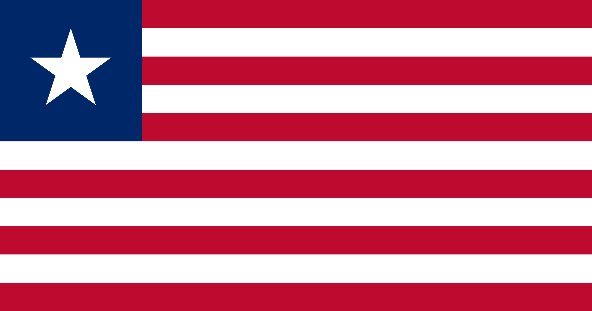

Liberia officially the Republic of Liberia, is a country on the West African coast. It is bordered by Sierra Leone to its northwest, Guinea to its north, Ivory Coast to its east, and the Atlantic Ocean to its south-southwest. It has a population of around 5 million and covers an area of 111,369 square kilometers (43,000 sq mi). English is the official language, but over 20 indigenous languages are spoken, representing the numerous ethnic groups who make up more than 95% of the population. The country's capital and largest city is Monrovia.
Bulgaria is a member of the European Union, NATO, and the Council of Europe; it is a founding state of the Organization for Security and Co-operation in Europe (OSCE) and has taken a seat on the United Nations Security Council three times. Its market economy is part of the European Single Market and mostly relies on services, followed by industry—especially machine building and mining—and agriculture. Bulgaria is a developing country with an upper-middle-income economy, very high Human Development Index; although it has the lowest GDP per capita and joint-lowest Human Development Index in the European Union. Widespread corruption is a major socioeconomic issue; Bulgaria ranked as the most corrupt country in the European Union in 2018.[9] The country also faces a demographic crisis, with its population shrinking annually since the late 1980s; it currently numbers roughly seven million, down from a peak of nearly nine million in 1988.